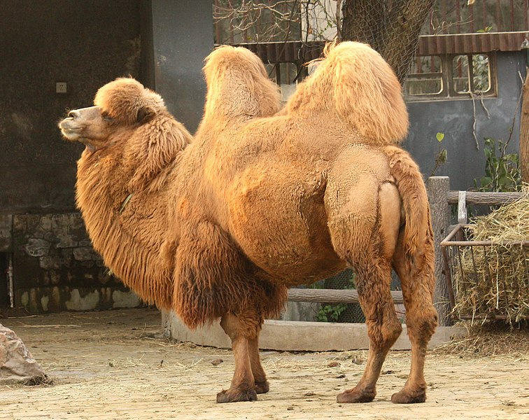
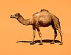
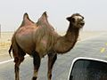

A camel (from: Latin: camelus and Greek: κάμηλος (kamēlos) from Semitic: gāmāl.) is an even-toed ungulate in the genus Camelus that bears distinctive fatty deposits known as "humps" on its back. Camels have long been domesticated and, as livestock, they provide food (milk and meat) and textiles (fiber and felt from hair). Camels are working animals especially suited to their desert habitat and are a vital means of transport for passengers and cargo. There are three surviving species of camel. The one-humped dromedary makes up 94% of the world's camel population, and the two-humped Bactrian camel makes up 6%. The Wild Bactrian camel is a separate species and is now critically endangered.
The word camel is also used informally in a wider sense, where the more correct term is "camelid", to include all seven species of the family Camelidae: the true camels (the above three species), along with the "New World" camelids: the llama, the alpaca, the guanaco, and the vicuña, which belong to the separate tribe Lamini. Camelids originated in North America during the Eocene, with the ancestor of modern camels, Paracamelus, migrating across the Bering land bridge into Asia during the late Miocene, around 6 million years ago.
| Image | Common Name | Scientific Name | Distribution |
|---|---|---|---|
|  | Bactrian camel | Camelus bactrianus | Domesticated; Central Asia, including the historical region of Bactria. |
|  | Dromedary/Arabian camel | Camelus dromedarius | Domesticated; the Middle East, Sahara Desert, and South Asia; introduced to Australia. |
|  | Wild Bactrian camel | Camelus ferus | Remote areas of northwest China and Mongolia. |